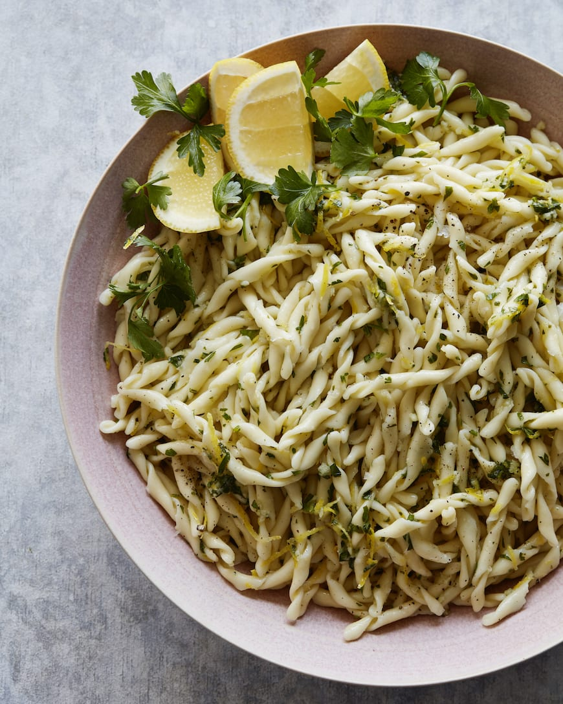

pasta gremolata met ricotta

Ingredienten
- 500 g Farfalle
- 1 el pijnboompitten
- 1 teentje knoklook
- 250g ricotta
- handje bladpeterselie
bereiding
- kook de pasta beetgaar in een ruime hoeveelheid gezouten water.
- snipper de peterselie en de knoflook. Vermeng ze met de geraspte citroenschil
- schep de ricotta door de warme pasta en verdeel over de borden. bestrooi met de gremolata en werk af met de pijnboompitte